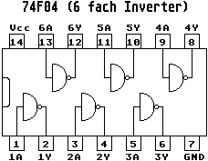

Hier das Schaltbild des 74F04 ICs mit der internen Beschaltung:

Der 16.042494MHz Taktpfad wurde von Atari so geplant. An Pin 191 vom
Combel Chip kommt er heraus, geht über den 0 Ohm Widerstand (mit
reinen Drahtbrücken können heutige Bestückungsmaschinen in der indus-
triellen Leiterplattenfertigung so gut wie nichts mehr anfangen).
weiterblättern
Kapitel Der Clockpatch aus der ST-Computer Zeitschrift, Seite 2